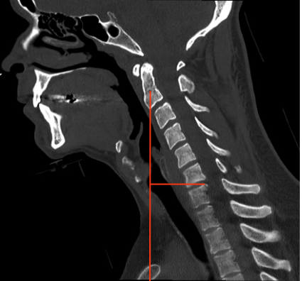

Adapted from: Feger J, Yap J, Knipe H, et al. CT cervical spine (protocol). Reference article, Radiopaedia.org (Accessed on 28 Dec 2025) https://doi.org/10.53347/rID-89993
1) Description of Measurement
Cervical sagittal vertical axis (SVA) quantifies the anterior–posterior global alignment of the cervical spine by measuring the horizontal offset between a cranial reference point and a caudal cervical landmark. It reflects the forward or backward translation of the head over the cervical spine and is a key parameter in the evaluation of cervical sagittal balance, deformity, and postoperative outcomes.
Increased cervical SVA correlates with neck pain, disability, impaired horizontal gaze, and poor health-related quality of life.
2) Instructions to Measure
3) Normal vs. Pathologic Ranges
Key points:
4) Important References
Tang JA, Scheer JK, Smith JS, et al; ISSG. The impact of standing regional cervical sagittal alignment on outcomes in posterior cervical fusion surgery. Neurosurgery. 2015 Mar;76 Suppl 1:S14-21; discussion S21. doi: 10.1227/01.neu.0000462074.66077.2b.
Ames CP, Blondel B, Scheer JK, et al. Cervical radiographical alignment: comprehensive assessment techniques and potential importance in cervical myelopathy. Spine (Phila Pa 1976). 2013 Oct 15;38(22 Suppl 1):S149-60. doi: 10.1097/BRS.0b013e3182a7f449.
Fujiwara H, Oda T, Makino T, et al. Impact of Cervical Sagittal Alignment on Axial Neck Pain and Health-related Quality of Life After Cervical Laminoplasty in Patients With Cervical Spondylotic Myelopathy or Ossification of the Posterior Longitudinal Ligament: A Prospective Comparative Study. Clin Spine Surg. 2018 May;31(4):E245-E251. doi: 10.1097/BSD.0000000000000619.
5) Other info....
Although traditionally measured on standing lateral radiographs, cervical SVA can be reliably estimated on upright CT or neutral-position CT reconstructions.
Should be interpreted alongside:
Excessive cervical SVA often represents compensatory mechanisms for thoracolumbar deformity.
When SVA is markedly abnormal, full-spine imaging is recommended to evaluate global sagittal balance.